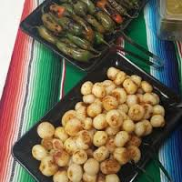
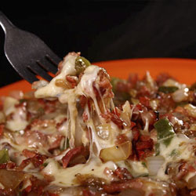
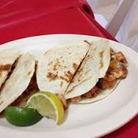
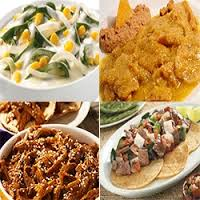

Inicio
TaquitoMX
La Carta
Ubicación
Fiestas y Eventos
TaquitoMX
FIiestas y Eventos
¡Somos la mejor opción para cualquier tipo de evento!
PARRILLADA MIXTA CON QUESO:

PASTOR, BISTEC, CHORIZO, CHULETA, QUESO
COMPLEMENTOS: Salsa Roja, Salsa Verde, Salsa Mexicana, Cilantro, Cebolla, Piña y Limones
CORTESÍA: Tortillas de Harina, Cebollitas Cambray, Verdura para Alambres
PARRILLADA MIXTA CON QUESO Y ARRACHERA

PASTOR, BISTEC, CHORIZO, CHULETA, QUESO, ARRACHERA
COMPLEMENTOS: Salsa Roja, Salsa Verde, Salsa Mexicana, Cilantro, Cebolla, Piña y Limones
CORTESÍA: Tortillas de Harina, Cebollitas Cambray, Verdura para Alambres
TACOS DE PASTOR CON QUESO

GRINGAS:(Tortilla de harina, Pastor y Queso fundido)
QUESADILLAS:(Tortillas de harina y Queso fundido)
COMPLEMENTOS:Salsa Roja, Salsa Verde, Salsa Mexicana, Cilantro, Cebolla, Piña y Limones
TACOS DE GUISADO (4 a escoger)

POLLO CON MOLE, TINGA DE RES, COCHINITA PIBIL, PAPAS CON CHORIZO, RAJAS CON CREMA, CHICHARRÓN EN SALSA VERDE
COMPLEMENTOS:Cochinita, Salsa roja, Salsa verde y Limones
CORTESÍA:Arroz y Frijoles
Todas las opciones anteriores incluyen:
2 horas de servicio de comida
Supervisor responsable
Personal uniformado y capacitado
Bolsas para la basura
Servilletas, platos y tenedores desechables
Saleros y servilleteros
Tortillas de maíz